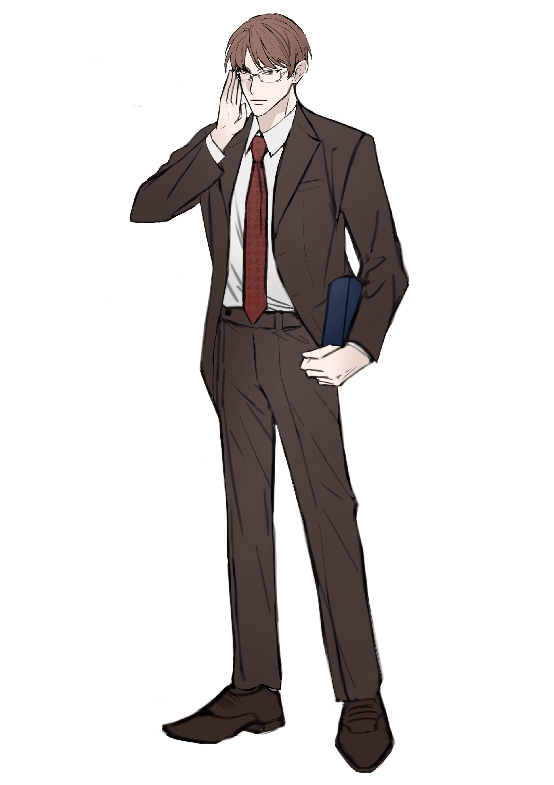

캐치 프레이즈
정신 승리의 대명사
한마디
“ 반박하시려면 근거를 가져오세요, 근거를. ”
외관
(매여리 님 커미션)
차분하게 내려오는 갈색 머리에, 갈색 눈. 눈 색과 머리카락 색이 같다.
안광이 없는, 下 삼백안. 그렇기에 늘 누군가를 깔보는 듯한 느낌이 있다. 실제로 그렇기도 하고.
새하얀 피부색. 마치 햇빛을 거의 받지 않은 것만 같다.
속눈썹 없이 살짝 째지고 날카로운 눈매인데, 미간 마저 자주 구기고 있다.
왼쪽 눈썹 끝에 세로 흉터. 앞머리로 가리고 다니기에 잘 보이지는 않는다.
흰색 셔츠, 빨간 넥타이, 고동색 정장. 신발은 자켓과 바지보다 더 짙은 갈색이다. 은색 언더림 안경을 착용했으며, 모든 옷차림이 단정하고 깔끔하다.
자칫하면 촌스러운 브라운 수트 차림인데다, 머리부터 발끝까지 갈색으로 범벅되어있음에도 나름대로 잘 소화하고 있다. Tone and Tone의 성공 사례.
손에는 두꺼운 책 한 권. 원서인 것으로 보인다.
이름
권원상 (權元上)
나이
37세
키/체중
187 / 67.7kg
성격
Keyword: 거만한 / 회의적인 / 자존심이 센
거만한
"여하튼 제 말이 맞습니다."
자신감이 지나치게 많으며, 무례할 정도로 뻔뻔하다. 자기보다 부족하고 아래에 있다고 생각하면, 남을 깔보며 업신 여기는 언행을 일삼는다.
회의적인
"그 말을 제가 어떻게 믿습니까? 증거 있어요?"
의심이 많다. 명확한 증거 없이는 남을 못 미더워한다.
다른 사람과 함께 일하는 것도 싫어한다.
자존심이 센
"당신만 그렇게 생각하는 것 같습니다만."
자존심이 너무 강한 나머지, 자신은 절대로 지지 않았다고 정신 승리한다.
자신의 방식과 선택에는 문제가 없다고 주장하며 자기 합리화를 일삼는 편.
기타
문학 석사, 영어학 전공자.
영어과 교수를 맡고 있다. 3대 독자 외동 아들이며, 아버지께서 학교 총장이시다.
안경을 올려쓰는 버릇이 있다.
오른손잡이이며, 양식은 기피한다.
나이에 상관없이 존댓말을 사용한다.
혈액형: A형
생일: 3월 1일
탄생화: 수선화 <Narcissus>
꽃말: 자기애
좋아하는 것: 한식
싫어하는 것: 간섭, 무시, 너무 달거나 느끼한 음식.
아직 개강을 하지 않은 터라, 나름대로 여유로운 하루를 보내고 있었다. 서점에서 내내 시간을 보내다가 책 한 권을 사들고 집에 돌아가려 지하철에 탑승했다. 타자마자 비어있는 자리를 찾아 앉은 후, 아까 사 온 원서를 집중해서 읽고 있었다.
소지품
안경 닦이, 영어 원서
관계
-